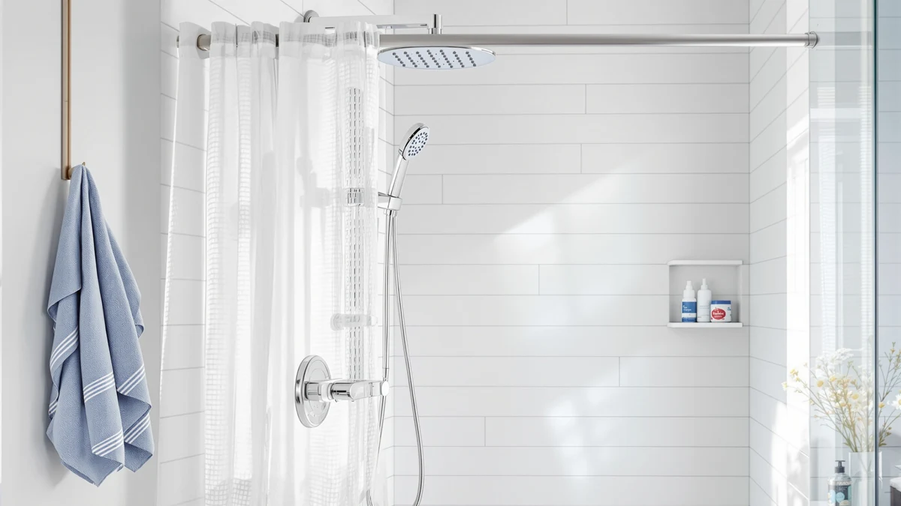

Shower Panel Low Water Pressure: How to Fix It (2026)
Prices and picks verified as of August 2026. Independent, reader-supported reviews.


Things to Know Before You Buy
- Most pressure loss starts at the inlet screen or supply hose, not inside the panel itself.
- Panels with independent diverters let you isolate one outlet, which helps far more on low-pressure lines than a high jet count does.
- Thermostatic mixing valves need a minimum pressure balance between hot and cold lines to open fully, and an imbalance can look like a pressure problem.
- Regular descaling prevents the gradual mineral buildup that causes pressure to drop over months rather than all at once.
A shower panel low water pressure fix rarely requires replacing the whole unit, since most weak-flow complaints trace back to a clogged inlet screen, a kinked supply hose, or a valve that was never opened all the way during installation. Multi-function panels route water through several small nozzles and a handheld wand at once, so sediment and mineral buildup that a standard showerhead would shrug off can choke an entire panel's spray pattern. Before you assume the unit itself is defective, it helps to know which parts actually control pressure and which ones just distribute it.
We researched manufacturer specs, plumbing forums, and verified owner reviews across dozens of shower panel models to find the pressure problems that show up again and again. Reviewers consistently note that panels installed on older galvanized pipe, or shared with a washing machine line, lose pressure the moment a second fixture runs, which has nothing to do with the panel's quality. Owners who trace the issue to their own plumbing, rather than the hardware, usually solve it in under an hour.
Shower panels lose pressure for different reasons depending on the type, and some panel styles simply handle low-flow lines better than others. The sections below cover the maintenance habits that keep jets clear for years, the mistakes that make pressure problems worse, and the questions readers ask most about diagnosing weak flow at the panel itself.
What You Need to Know
Shower panels split incoming water among several outlets: a rain shower head, a handheld wand, and often four to six body jets. Each outlet has its own small opening, and household water pressure has to cover all of them if you run more than one at a time. When homeowners search for a shower panel low water pressure fix, the underlying issue is almost always restricted flow before the water reaches the panel, a valve that isn't fully open, or mineral deposits narrowing the nozzles themselves.
Municipal water pressure in the US typically runs between 40 and 80 psi. Most panels are rated to work within that range, but the diverter valve inside the panel divides whatever pressure arrives among the active outlets. Turn on the rain head and two body jets at once on a 45 psi line, and each outlet gets a fraction of the flow a single showerhead would receive. That's expected behavior, not a defect.
Supply line diameter matters too. Many older homes still run 1/2-inch pipe to the bathroom, and a shower panel's body jets can demand more simultaneous flow than that pipe was sized for. If pressure drops sharply only when multiple outlets run together, the panel isn't the problem. The plumbing feeding it is undersized for a multi-outlet fixture.
Before troubleshooting further, isolate the rain head alone with every other outlet closed. If pressure feels normal at that single outlet, the panel is fine and the issue is distribution, not supply.
Types and Categories
Single-function rain panels send all available pressure to one overhead head, so they perform closest to a standard showerhead and rarely trigger pressure complaints. Multi-function towers, the type most commonly sold on Amazon, add a handheld wand and anywhere from two to six body jets on a shared diverter. These are the panels most likely to feel weak on low-pressure lines, since the diverter has to split flow across active outlets.
Thermostatic panels add a mixing valve that blends hot and cold water to a set temperature before it reaches the outlets. That valve needs a minimum pressure balance between the hot and cold supply lines, often around 15 to 20 psi difference or less, to open fully. A water heater with a weak recovery rate, or a partially closed isolation valve on either line, can starve a thermostatic panel even when overall house pressure is fine. Cleaning the screens won't solve a shower panel low water pressure fix caused by that imbalance; the water heater or isolation valve needs attention instead.
LED and digital display panels layer electronics onto a multi-function base and don't change the hydraulics, but the added components give sediment more surfaces to collect on over time. Panel height and jet count also affect perceived pressure: a 5-foot tower with six jets asks more of your supply line than a 3-foot panel with two.
How to Choose
If low household pressure is a known issue in your home, choose a panel built around that constraint rather than fighting it after installation.
Start with the flow rate spec, usually listed in gallons per minute per outlet, and add up what the panel demands if you plan to run multiple outlets together. A panel rated for 2.5 GPM per body jet with six jets theoretically wants 15 GPM if everything runs at once, far more than most residential lines deliver. Nobody runs every jet at the same time in practice, but the spec tells you how the panel was engineered and whether its diverter favors one outlet over the others.
Favor panels with independent diverters over ones that force every outlet open together. A diverter that lets you run the rain head alone, or the body jets alone, gives low-pressure homes the control they need. Manufacturer listings and verified buyer reviews usually mention this directly, and it's worth checking the Q&A section for phrases like "can you use the jets separately."
Skip thermostatic mixing valves if your water heater struggles to maintain consistent pressure, since these valves are the most sensitive component to supply imbalance. A simpler two-handle or single-lever panel gives you more direct control when pressure is inconsistent.
Check the minimum pressure rating in the product specs or manual. Most panels list one, often 30 to 45 psi. If your home tests below that on a hardware-store pressure gauge, no panel performs well until the house-level pressure improves, and a shower panel low water pressure fix at the fixture won't change that.
Weigh jet count against your actual pressure. Owners with well systems or older homes consistently report better results from panels with two to three total outlets rather than five or six, simply because less demand competes for the same supply.
Common Mistakes to Avoid
The most common mistake is blaming the panel before checking the basics. Installers frequently leave the shutoff valves behind the wall partially closed after installation, which caps flow before it even reaches the diverter. Open both hot and cold valves fully and recheck pressure before assuming the unit is faulty.
Skipping the inlet filter screens is another frequent error. Most panels ship with small mesh screens at each supply connection to catch debris from the pipes, and installers sometimes discard them to save time. Without a screen, sediment collects directly inside the diverter valve, where it's harder to clean and causes uneven pressure across outlets.
Buying a panel with more jets than your supply line can support is a planning mistake, not a hardware one. Six-jet towers look impressive in photos, but on a shared 1/2-inch line feeding a two-bathroom house, pressure complaints will follow the panel for its entire life no matter how well it's built.
Running every outlet at once and judging the panel by that experience skews expectations. Test each outlet on its own first, then decide whether combined flow needs improving. Finally, ignoring gradual pressure loss for months lets mineral scale harden inside the jets, turning a five-minute descaling job into a full teardown.
Care and Maintenance
Regular descaling keeps pressure consistent for years. Fill a plastic bag with white vinegar, secure it around the shower head and jets with a rubber band, and let it soak for 30 to 60 minutes every one to two months in hard-water areas. Scrub any remaining deposits with an old toothbrush, since mineral crust builds up fastest in the smallest nozzle openings.
Clean the inlet screens twice a year. Shut off the water supply, disconnect the flexible hoses at the panel, and rinse the small mesh filters under running water. This single habit prevents most of the gradual pressure loss owners report after a year or two of use.
Check the body jet caps and the handheld wand nozzle for buildup separately from the main rain head, since they're easy to overlook during a quick wipe-down. A toothpick or soft wire brush clears individual holes without scratching the finish.
If your panel has a digital temperature display or LED lighting, keep the control unit dry and avoid pointing high-pressure cleaning sprays directly at the electronics housing. Wipe the panel body with a damp microfiber cloth instead.
Test your home's static water pressure with an inexpensive gauge once a year, especially before winter, since pressure can shift as pipes age or municipal supply changes. Catching a slow decline early makes any shower panel low water pressure fix easier than waiting until flow drops noticeably.
Our Top Picks
These three panels handle flow distribution differently, and all three hold up well for households working with average to below-average water pressure.

Editor's Pick
HSYLYPA LED 5-in-1 Shower Panel
A five-outlet LED panel with an independent diverter, so you can isolate the rain head when pressure is tight instead of splitting flow across every jet.
$211.99
Check Price on Amazon
Best Value
VEVOR Shower Panel System 5
A straightforward five-function tower with wide inlet screens that resist clogging, a practical pick for homes on well water or older plumbing.
$118.90
Check Price on Amazon
Premium Choice
ROVOGO Shower Panel Tower System
A stainless tower with a simpler two-outlet layout that asks less of your supply line; reviewers note steadier pressure than jet-heavy competitors.
$139.99
Check Price on AmazonFrequently Asked Questions
What causes low water pressure in a shower panel?
Most cases trace back to a clogged inlet screen, a partially closed shutoff valve, or a supply line too narrow to feed several jets at once. The panel's diverter itself is rarely the actual defect.
Can I fix shower panel low pressure without a plumber?
Yes, in most cases. Cleaning the inlet screens, fully opening the shutoff valves, and descaling the jets with vinegar solves the majority of pressure complaints without hiring anyone.
Do shower panels reduce water pressure compared to a regular showerhead?
Running multiple outlets together always splits available pressure among them, so a panel can feel weaker than a single showerhead in that mode. Used one outlet at a time, pressure at each outlet should match a standard showerhead.
How do I clean clogged jets on a shower panel?
Soak the affected outlets in a vinegar-filled bag for 30 to 60 minutes, then scrub with an old toothbrush and clear individual holes with a toothpick. Repeat every one to two months in hard-water areas to keep pressure from dropping again.
What water pressure do shower panels need to work properly?
Most panels list a minimum operating pressure between 30 and 45 psi, with multi-jet and thermostatic models needing the higher end of that range. Check the product manual and test your home's static pressure before buying a jet-heavy panel.
Verdict
A shower panel low water pressure fix almost always comes down to what happens before the water reaches the diverter, not a flaw in the panel itself. Clogged inlet screens, partially closed shutoff valves, and supply lines that can't keep up with a five- or six-jet tower explain the vast majority of weak-flow complaints we researched. Start troubleshooting there before assuming you need new hardware, and test each outlet on its own to see whether the problem is the panel or the plumbing feeding it.
If you do need a new panel, choose one that matches your home's actual pressure rather than the highest jet count on the shelf. The HSYLYPA LED 5-in-1 is the strongest pick for households working with average pressure, since its independent diverter lets you isolate the rain head instead of splitting flow across every outlet at once. Pair the right panel with routine descaling and clean inlet screens, and pressure problems mostly stay solved.